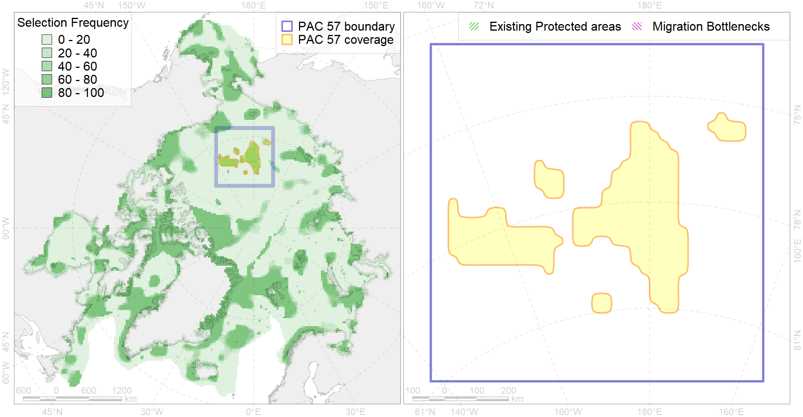

Region 57
Region 57
“ArcNet” scenario 33 achievement for region 57.
Use Accenter for advanced mode.

1
CFs inside of Region completely
8
CFs inside of Region at quarter
4
Complete-targets achievement by Region
11
Half-targets achievement by Region
| CF | Name | Target Achievement for Region | Proportion of Target Achievement in Region | Amount Proportion in Region |
|---|---|---|---|---|
| 7203 | VI.4.7. Canyons | 100.0% | 100.0% | 100.0% |
| 7206 | VI.5.3. Ridges | 90.9% | 90.4% | 82.0% |
| 7205 | VI.5.2. Terraces | 99.1% | 98.4% | 81.9% |
| 7207 | VI.5.7. Canyons | 96.1% | 95.6% | 72.4% |
| 7201 | VI.4.2. Terraces | 95.7% | 94.0% | 66.2% |
| 3048 | Multiyear Ice distribution in September in the Chukchi Sea LME | 236.0% | 92.0% | 44.4% |
| 7204 | VI.5.Chukchi Plateau and Northwind Ridge VI.5.1. Plateaus | 89.8% | 88.8% | 28.8% |
| 7200 | VI.4. Mendeleev and Alpha Ridges VI.4.1. Plateaus | 50.7% | 50.6% | 27.7% |
| 7083 | I.2.2.1. Chukchi slope | 129.3% | 77.2% | 22.7% |
| 7018 | Amerasian bathyal region | 211.0% | 80.7% | 19.3% |
| 7202 | VI.4.3. Ridges | 15.2% | 15.2% | 15.2% |
| 3031 | Marginal Ice Zone distribution in July in the Central Arctic LME | 37.4% | 37.2% | 10.0% |
| 7183 | VII.3.5. Deep parts of canyons (below slope) | 35.6% | 25.5% | 8.6% |
| 2061 | Ringed seal circumpolar foraging areas as predicted by MIZ distribution | 25.8% | 13.5% | 6.9% |
| 7182 | VII.3.4. Abyssal mountains | 33.6% | 26.0% | 5.7% |
| 9001 | polar bear of the AB (Arctic Basin) subpopulation distribution | 11.7% | 11.7% | 4.6% |
| 3058 | Multiyear Ice distribution in September in the East-Siberian Sea LME | 12.3% | 12.2% | 3.7% |
| 4090 | Fish zoogeography, Arctic Region, Subarctic Transitional-Atlantic Province, Euro-Asian Bathyal District | 21.9% | 12.2% | 3.7% |
| 3049 | Multiyear Ice distribution in September in the Central Arctic LME | 15.8% | 15.7% | 3.1% |
| 4096 | Range of the Glacial eelpout (Lycodes frigidus) | 45.4% | 11.6% | 2.9% |
| 4079 | Fish zoogeography, Arctic Region, Arctic Abyssal Province (11A -Scandian, 11B - Central-Arctic and 11C - Baffin Deep-sea Districts ) | 64.8% | 11.1% | 2.8% |
| 7106 | II.1.1.15. East Siberian outer shelf | 17.1% | 14.8% | 2.7% |
| 4037 | Distribution of the Glacial cod (Arctogadus glacialis) (F34) | 19.5% | 4.7% | 2.0% |
| 5116 | 5116 Beluga EBeaufort Sea autumn core | 6.5% | 4.8% | 1.9% |
| 7181 | VII.3.3. Abyssal hills | 20.3% | 9.8% | 1.7% |
| 3030 | Marginal Ice Zone distribution in July in the Chukchi Sea LME | 6.0% | 5.1% | 1.6% |
| 7037 | Amerasian shelf transitional zone | 7.8% | 4.7% | 1.4% |
| 7082 | I.2.1.6. Outer shelf with medium to high profile; from the Blue Habitats map, Harris et al., 2014 | 9.3% | 5.4% | 1.4% |
| 4041 | Range of the Polar Cod (Boreogadus saida) (F35) | 9.0% | 3.4% | 1.2% |
| 7023 | Canada Basin abyssal region | 13.9% | 13.5% | 1.1% |
| 2009 | Bearded seal whelping areas in the East-Siberian Sea | 5.5% | 3.6% | 1.1% |
| 4077 | Fish zoogeography, Arctic Region, High-Arctic Shelf Province, Laptev – East-Siberian District (10D) | 2.3% | 1.2% | 0.5% |
| 7080 | I.2.1.4. Shelf plains | 6.8% | 0.8% | 0.4% |
| 5105 | Bowhead whale of the Bering-Chukchi-Beaufort population autumn distribution | 0.6% | 0.4% | 0.3% |
| 3040 | Marginal Ice Zone distribution in July in the East-Siberian Sea LME | 0.5% | 0.5% | 0.2% |
| 7180 | VII.3.2. Abyssal plains | 1.1% | 1.1% | 0.1% |
| 7084 | I.2.2.2.Chukchi Sea Canyons | 0.1% | 0.1% | 0.0% |